| Created:
04/09/021. Revised: 05/18/01. Copyright © 2001 by Victor Manta, Switzerland. All rights reserved in all countries. |
|
Famous Chinese Paintings on
Moon-shaped Fans Postage Stamps
(Issue of 1975)
Issue date: August 15, 1975. Process: Deep etch offset. Photographer: Liu Pao-chin. Paper: Locally made watermarked paper. Printer: China Engraving & Printing Works, R.O.C. Scott: 1950 -1953.
Four fan pictures painted by artists of the Sung dynasty (AD 960-1279 ) were
selected from the National Palace Museum collection. They are briefly described
as follows:
1.00 Cherry-apple Blossoms, by Lin Chun. Lin Chun (flourished ca. 1174) was a
native of Chien`tang, the modern Hangchou in Chekiang. He was a member of the
Painting Academy in the Chun-hsi period (1174-1190) of the Emperor Hsiao- tsung.
His paintings depict flowers and birds, animals, and fruit. He followed the
pattern of Chao Chang, using very thinly color on his paintings, and catching
the wonder of nature.
2.00 Spring Blossoms and a Colorful Butterfly, by Ma Kuei. Ma Kuei was a native
of Ho-chung. He was the son of Ma Shih-jung and the elder brother of Ma Yuan.
His skill equaled that of the other Ma family members. During the first year of
the Ching-yuan era (1195-1200), during Ning-tsung's reign (Southern Sung), he
entered the Painting Academy as a Painter-in-Attendance. He painted landscapes,
figure paintings, fruit and flowers, animals and birds. His light application of
color was very skillful, and his paintings of birds and animals were brilliant.
Their poses, whether flying or calling, were extremely lifelike and were not equaled
by other painters.
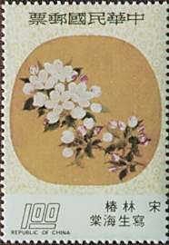 |
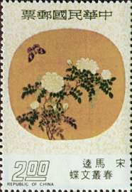 |
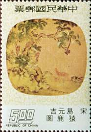 |
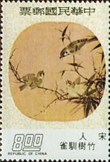 |
5.00 Monkeys and Deer, by I Yuan-chi. I Yuan-chi (flourished
ca. 1066), whose familiar name was Ching-chih, was a native of Chang-sha in
Hunan. Of great skill and intelligence, he specialized at first in flowers and
fruit, but after seeing the paintings of Chao Chang, he became ambitious to gain
fame in an area not addressed by previous painters. For this reason he chosen to
paint deer and apes, travelling for this purpose deep into the hills of South
China, in order to observe them. After he had build a house, he laid out a
garden and pool in which he arranged rocks, shrubbery and flowers . He stocked
his garden with waterfowl and wild animals, observing their behavior in order to
use them as subjects for paintings. The perfection of his drawings, taken from
natural life, was unmatched in his time.
8.00 Tame Sparrows among Bamboo, by an anonymous, but very skilful Chinese artist
from the same period.
Famous Chinese Paintings on
Folding Fans Postage Stamps
(Issue of 1975)
Issue date: April 16, 1975. Process: Photogravure: Photographer Liu Pao-chin. Paper: Photogravure stamp paper. Printer: Joh. Enschedé Stamps security Printers B.V, The Netherlands. Scott: 1934 - 1937.
For the promotion of the Chinese Cultural Renaissance Movement, a set of Famous Chinese Paintings on Folding Fans Postage Stamps was released. Four fan pictures, painted by the artists of the Ming dynasty (AD 1368-1644) were selected from the National Palace Museum collection. They are briefly described as follows:
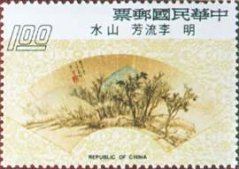 |
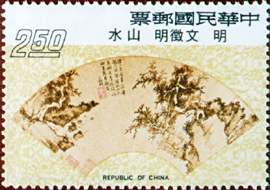 |
1.00 Landscape by Li Liu-fang. Li Liu-fang (1575-1629) was
native of Chia-ting in Kiangsu. He was a poet and painter, being noted for his
engraving of seal characters, and for his landscape, which resembled those of
Sung and Yuan dynasty painters, most notably Wu Chen. This is one of the
"Song of nine friends" in a painting which he did for Wu Mei-tsun.
2.5 Landscape by Wen Cheng-ming. Wen Cheng-ming (1470-1559) was a native of
Chang-chou, Kiangsu. Known as a gentleman of dignified character, he showed
great ability in poetry, prose, calligraphy and painting. In the latter he
studied the work of Chen Chou, but assimilated the finest points of the Sung and
Yuan dynasty masters. His best works are his fine and intricate miniatures, for
though he used a coarse brush. The result was similar to that of Chen Chous
paintings. He was known as one of the Four Masters of the Ming dynasty.
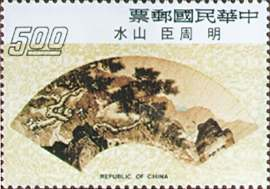 |
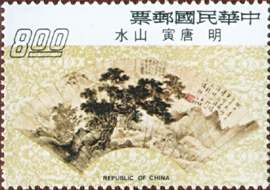 |
5.00 Landscape by Chou Chen. Chou Chen (1450-1535) was a
native of Wu-hsien in Kiangsu, whose familiar name Shun-ching and sobriquet
Tung-ts'un. In landscape he followed the style of Chen Shian, acting as the
transmitter of Sung styles to later generations. He displayed a fresh and lively
use of the brush.
8.00 Landscape by Tang Yin. Tang Yin (1470-1523) was a native of Suchou, Kiangsu.
He studied landscape painting under Chou Chen, but later surpassed him by far.
He used a moist brush which gave his paintings a close-woven and balanced
quality. Critics have noted the affinities of his work to that of earlier
painters. He also painted figures, both male and female, bird and flower
paintings, and pictured towers and pavilions. He is renown as one of the Four
Masters of the Ming dynasty.
Famous Chinese Paintings on
Moon-shaped Fans Postage Stamps
(Issue of 1976)
Issue date: July 14, 1976. Process: Deep etch offset. Photographer: Liu Pao-chin. Paper: Locally made watermarked paper, with gum. Printer: China Engraving & Printing Works, R.O.C. Scott: 2001 - 2004.
The fan appeared in the three ancient dynasties Hsia, Shang and Chou (2205-255 B.C.), and was widely used in the Sung dynasty. The four fan pictures, recommended by the National Palace Museum, are on silk fans, painted by four artists of the Sung dynasty. The stamps are briefly described as follows:
2.00 by Li Tung. Li Tung's date and place of birth are unknown, but during the reign of the Emperor Li-tsung of the Southern Sung dynasty, he often did paintings of villages with houses, fields, and gardens.
5.00 Lilies, by Lin Chun. Lin Chun (flourished 1174) was a native of Chien-tang, the modern Hangchow in Chekiang. He was a member of the Painting Academy in the Chun-hsi during (1174-1190) of the Emperor Hsiao-tsung era. His paintings depict flowers and birds, animals, and fruit. He modeled his works after Chao Chang, applying color very thinly on the paintings, and catching the wonder of nature.
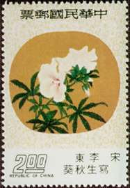 |
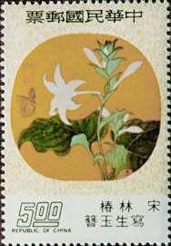 |
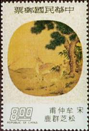 |
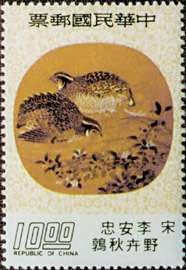 |
8.00 Two Deer, Mushrooms and Pine, by Mou Chung-fu. We don't know much about Mou Chung-fu, only that he was a native of Suichou in Hupei. He painted birds and wild animals, his chickens being particularly fine. His paintings of apes, monkeys, and deer bear comparison with those of Yuan-chi of the Northern Sung.
10.00 Wild Flowers and Quail, by Li An-chung. Li An-chung (flourished 1119-1131) was a member of the Painting Academy, during the Hsuan-ho period, and held various official positions. In the Shao-hsing period, after the re-establishment of the Sung in the South, he once more held a position in the Painting Academy. He painted flowers, birds, and wild animals in motion.
| Created:
04/09/021. Revised: 05/18/01. Copyright © 2001 by Victor Manta, Switzerland. All rights reserved in all countries. |
|